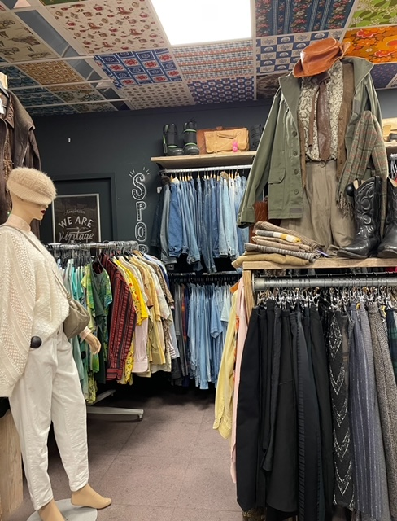
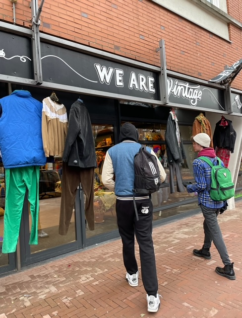
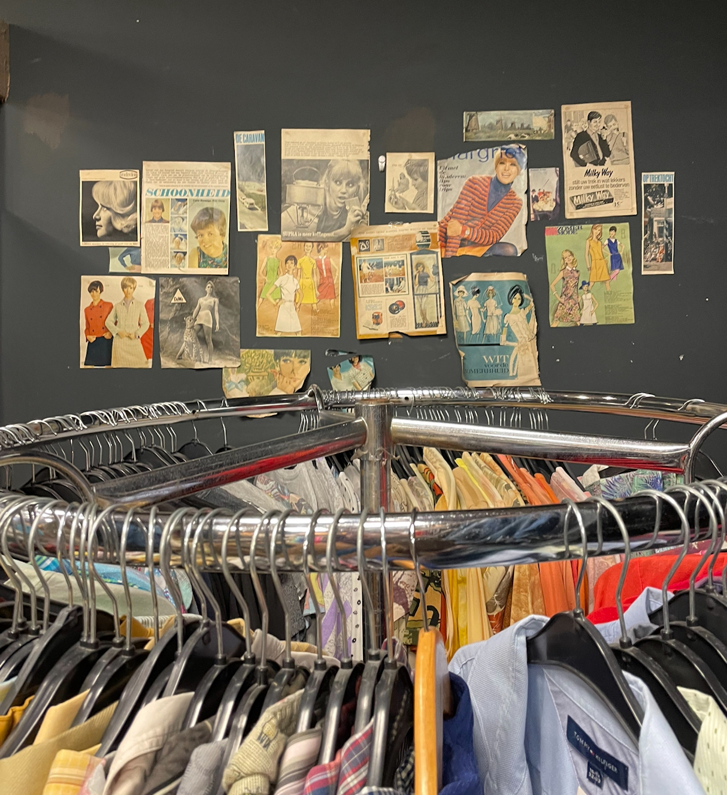
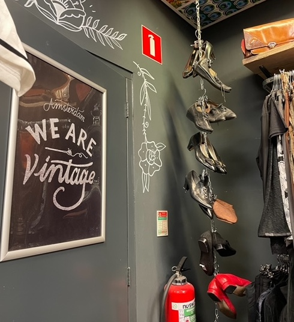

WeAreVintage
WeAreVintage is een vintage winkel gevestigd in
Amsterdam-Oost en heeft van alles op voorraad, wat
je maar wensen kan! Handschoenen, jassen,
jurken, etc. Ze geven ook om de tijd Kilo Sales. Per kilo betaal je dan een standaard prijs,
in plaats van per kledingstuk.


Mijn ervaring
Ik was erg verrast toen ik de winkel binnenliep.
De binnenkant was erg leuk gedecoreerd, met
vintage posters en veel paspoppen met
outfits van verschillende
stijlen. Wat tof is, omdat iedereen er wel
inspiratie uit kan halen! Er was een ruime voorraad
van leuke kleding en stofjes.
Ik ben bij veel andere vintage winkels geweest,
en daar hadden ze vaak toch niet zo een diverse voorraad of een even
leuke interieur. Dus deze winkel is wel
echt een aanrader.

